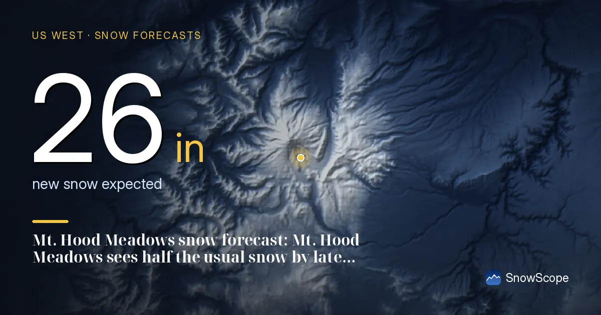
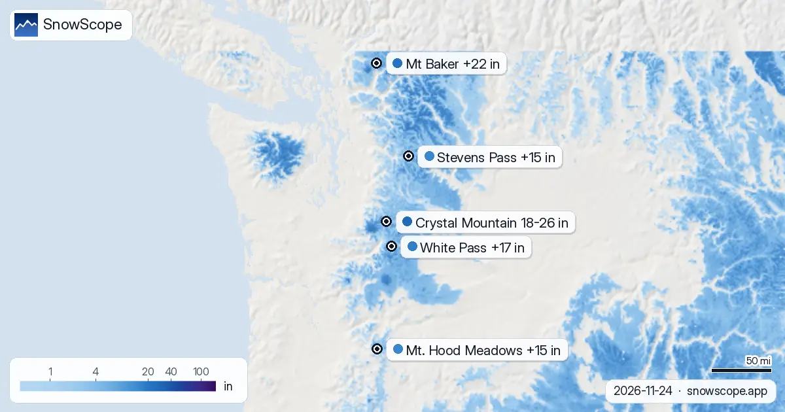

Mt. Hood Meadows snow forecast: Mt. Hood Meadows sees half the usual snow by late November
Mt. Hood Meadows snow forecast – Early-season snow across the US West is running thin compared to past winters. The forecast for the next three days shows the strongest storms will hit the highest slopes, with Crystal Mountain facing mixed rain and snow lower down.
See the live snow forecast for Mt. Hood Meadows in the SnowScope appSnow depth, powder alerts and the 3D map, free.
Where the new snow will fall
Crystal Mountain will receive the most fresh snow across the region over the next three days: up to 66 cm is forecast to fall by November 27, though 46 to 66 cm is the likely range depending on exactly where the heaviest bands set up. The snow will not reach the base evenly. Above 1,710 m, 47 cm is expected; at the mid-mountain around 1,708 m, the snow mapper shows 47 cm arriving; down at the base near 1,344 m, only 18 cm will fall over the next week.
Mt Baker will see 56 cm of new snow total, but the pattern here is sharper: the summit above 1,556 m gets the most (66 cm by next week), while the mid-slopes and base stay drier. The snow line drops as the system moves through, so rain will mix with snow below 1,420 m.
White Pass and Mt. Hood Meadows will see gentler totals. White Pass expects 42 cm by November 27, with the summit getting 49 cm by next week but the base only 18 cm. Mt. Hood Meadows faces the least fresh snow of the three: just 39 cm total, though the summit elevation of 2,226 m means the top gets 35 cm by next week.
| Resort | Snow depth | New snow, 72 h | Coming, next days | Top |
|---|---|---|---|---|
| Crystal Mountain | 15 in (38 cm) | 4 in (11 cm) | 26 in (66 cm) | 6,798 ft (2,072 m) |
| Mt Baker | 11 in (28 cm) | 8 in (20 cm) | 22 in (56 cm) | 5,105 ft (1,556 m) |
| White Pass | 16 in (40 cm) | 3 in (7 cm) | 17 in (42 cm) | 6,519 ft (1,987 m) |
| Mt. Hood Meadows | 20 in (51 cm) | 4 in (9 cm) | 15 in (39 cm) | 7,303 ft (2,226 m) |
| Stevens Pass | 11 in (29 cm) | 4 in (11 cm) | 15 in (37 cm) | 5,666 ft (1,727 m) |

When the snow arrives
November 26 is the key day. Crystal Mountain will pick up 48 cm that day alone; Mt Baker gets 34 cm; White Pass 26 cm; Mt. Hood Meadows 26 cm. This is when the storm bands will be most active across the summits.
The two days either side are quieter. November 25 brings light snow to all resorts (2 to 13 cm depending on the mountain), and November 27 wraps up the event with another 9 to 13 cm. If you are chasing the heaviest snow, Wednesday 26th is the day to be on the mountain.
Rain mixed in at lower elevations
This is not a pure snow event at all elevations. The snow line sits around 1,540 m at Crystal Mountain, so rain will fall below that height while snow accumulates above. At Mt. Hood Meadows, the base at 1,380 m sits close to or below the freezing level for much of the event, meaning the base may see mostly rain or wet snow rather than dry powder.
Stevens Pass, the lowest of the resorts tracked, will also see this mixed rain-and-snow pattern: at 1,166 m the base is well below the snow line. Even so, upper slopes at Stevens will collect 37 cm by November 27.
Still behind the usual pace
Even after this storm, the region will not catch up to a normal late November. Mt. Hood Meadows sits at 51 cm on the upper slopes today; the typical depth on this date is usually 73 cm. Crystal Mountain, at 38 cm (measured at a station 3 km away), is at mid-height: past winters show 73 cm is normal, and the depth here is only 36 cm at mid-mountain (1,708 m). After the November 26 storm, Crystal Mountain should climb toward 100 cm at the summit, but that is still below the typical peak of 149 cm.
The region overall has lost snow cover in the past two days. On November 22, 1,114,740 km² showed snow; today that area has shrunk to 962,540 km². After the storm passes, the snow-covered area will drop further as rain eats into lower elevations and the freezing level climbs.
What this means for skiing
The timing is tight. November 26 is the main event; head to the highest slopes to stay above the freezing level and find the best accumulation. Crystal Mountain and Mt Baker summits will offer the most new powder. By November 27, the storm will fade, so if you wait until Thursday, the snow window may close fast in the valley.
The mix of rain and snow lower down also means early-season conditions: thin base and rocks near the surface at mid-mountain resorts like Mt. Hood Meadows and Mt Baker. The upper slopes fare better, but even there, the season is running behind. Measure twice before you descend.
Tips for skiers
- Target the highest slopes (above 1,700 m at Crystal Mountain or Mt Baker summit) on November 26 for the most new snow. Lower elevations will see rain.
- Watch the freezing level closely: it rises throughout the event (from 1,540 m to as high as 1,970 m at Crystal Mountain by November 26). Stay above that line.
- Early November snow is thin. Check for rocks under the base, especially at mid-mountain elevations. Ski the groomed runs or confirmed deep powder zones.
- If you go off-piste, check the latest official avalanche bulletin before you leave the resort.
- Wednesday 26th is the peak snow day; Thursday 27th and Friday 28th will be much quieter.
About these numbers
Resort snow depths are the deepest snow on the resort's upper slopes on the date shown; they are estimates for an area, not a measurement at one point. Forecasts can change. Always read the official avalanche bulletin before going off-piste.
Official avalanche bulletins: avalanche.org
Cite this report
For research, teaching or the press: the numbers and charts are free to reuse under CC BY 4.0 with this citation.
SnowScope (2026), Mt. Hood Meadows snow forecast: Mt. Hood Meadows sees half the usual snow by late November, https://snowscope.app/blog/en/2026/11/us-west-mt-hood-meadows-snow-forecast-24-november-2026.html, accessed 2026-11-24
SnowScope (Atlas Labs). (2026, November 24). Mt. Hood Meadows snow forecast: Mt. Hood Meadows sees half the usual snow by late November. SnowScope snow reports. https://snowscope.app/blog/en/2026/11/us-west-mt-hood-meadows-snow-forecast-24-november-2026.html
BibTeX
@misc{snowscope2026uswestmthoodmeadowssnowf,
author = {{SnowScope (Atlas Labs)}},
title = {Mt. Hood Meadows snow forecast: Mt. Hood Meadows sees half the usual snow by late November},
year = {2026},
month = nov,
howpublished = {\url{https://snowscope.app/blog/en/2026/11/us-west-mt-hood-meadows-snow-forecast-24-november-2026.html}},
note = {Published 2026-11-25 08:19 UTC; accessed 2026-11-24}
}· CC BY 4.0 · Methods, data and tools →
Mt. Hood Meadows: snow and temperature by height, this winter vs last (tools) →
Follow Mt. Hood Meadows
Free: a message when fresh snow is coming, and the forecast every morning.
More snow reports

White Pass rewards early bookings on weekdays. By mid-December, mid-mountain holds 40 in (102 cm) in a typical year. Data from 13 November 2026.

Mt. Baker in December: 46 in (116 cm) of snow at mid-mountain on a typical 15 December, and a $98.80 Monday-to-Thursday ticket sold on the day only.

Mt Baker, Washington: about 133 in (337 cm) at the usual peak at mid-mountain in 46 past winters, a world snowfall record, no lodging on the hill, and what that means.